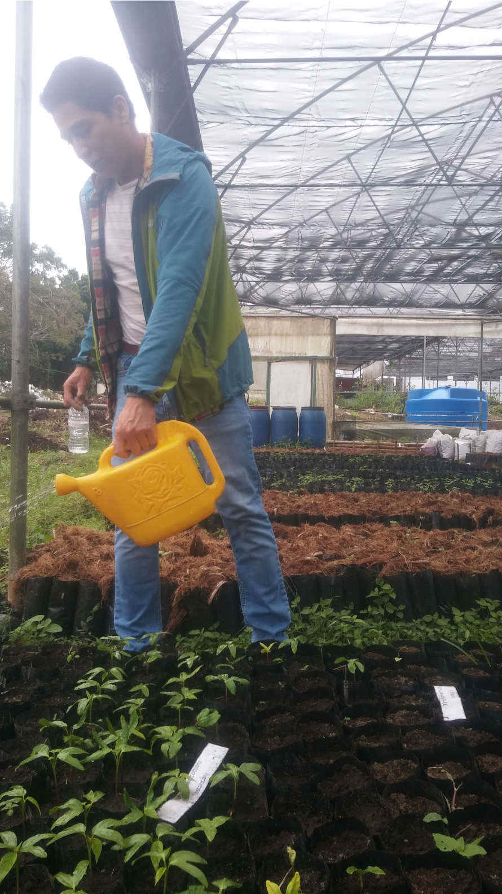

Algunos de mis servicios profesionales
Actividades Ambiental

Como asesor ambiental comprometido con la sostenibilidad, experiencia en servicios integrales en educación y gestión ambiental.

Estos programas de educación ambiental se diseñaron para fomentar la conciencia y la acción, abordando desde la gestión integral de residuos hasta la remediación ambiental, la conservación de ecosistemas y la reforestación.
Además, de implementar viveros para la producción de especies nativas, esenciales para la restauración de áreas degradadas y la promoción de la biodiversidad.

Mi enfoque holístico busca empoderar a comunidades y organizaciones para adoptar prácticas sostenibles que aseguren un futuro más verde y resiliente.
Servicios capacitación
Servicios integrales de capacitación y asesoría productiva en agroecología.

Capacitando en la implementación de manejos agroecológicos sostenibles, la preparación de bioinsumos y plaguicidas naturales, promoviendo la salud del suelo y las plantas.

Con amplia experiencia, el asesoramiento optimizar actividades respetuosas con el medio ambiente y la biodiversidad.
Capacitamos a grupos de trabajo, para emprender en el proceso de compostaje y lombricompostaje a diferentes escalas:pequeña mediana y gran escala, en aspectos administrativos, normativos, de seguridad y logística.

Aplicando soluciones a las problemáticas como los olores desagradables, plagas, lenta degradación, flujo de trabajo, mal manejo del espacio entre otras problemáticas recurrentes como también ocurre en el compostaje.
Asesor Ambiental
Como biólogo especializado, tengo experiencia en gestión y administración de oficina, subordinación y coordinación, conocimientos en normas y reglamentaciones ambientales principalmente.
Desde potentes estimulantes a base de microorganismos benéficos como bacterias ácido lácticas y microorganismos de montaña, hasta fertilizantes nutritivos y plaguicidas naturales que combaten eficazmente plagas sin dañar la salud ni el ecosistema.
Además, combatiendo para reducir la contaminación y promover la gestión integral de residuos adecuada, promuevo el uso de lombriz californiana para un compostaje eficiente y microorganismos especializados para acelerar la descomposición de materia orgánica, transformándola en tierra fértil.

Brindando acompañamiento durante todo el proceso de aprendizaje, para que lograres establecer un sistema de compostaje y lombricompostaje sin fauna nociva.

Promuevo el cultivar de manera sostenible, obteniendo cosechas abundantes y saludables mientras proteges nuestro planeta.
Servicios especializados

Sabemos lo importante que es la salud del suelo y la importancia de la toma de muestras para conocer su estado, para el análisis y diagnóstico rápido de suelos, directamente en tu terreno.
Junto con los indicadores biológicos, con mediciones en sitio determinamos parámetros esenciales para la salud de los cultivos:
Macronutrientes: Nitrógeno (N), Fósforo (P) y Potasio (K).
Conductividad Eléctrica (CE) y pH: Para evaluar la salinidad y acidez del suelo.
Interpretación de Indicadores Visuales: Identificación de signos en el suelo y plantas para una intervención efectiva.
Recomendaciones de Bioinsumos: Medición de parámetros para la dosificación precisa para optimizar tus cultivos.
Obteniendo información clave para mejorar la fertilidad y productividad de los suelo de manera eficiente.
Control de plagas: Con las recomendaciones necesarias para mantener controladas las plagas, esto incluye los manejos adecuados sin dañar la salud y el ambiente.
La dosificación adecuada con la frecuencia necesaria para el control efectivo y mantener los cultivos saludables.